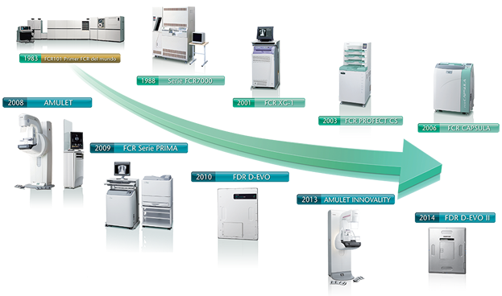

Sistemas médicos
FUJIFILM es considerado líder y pionero en el desarrollo de sistemas médicos

DESCRIPCIÓN:
FUJIFILM ha sido pionero y líder en el desarrollo de tecnologías innovadoras enfocadas en la digitalización, visualización, almacenamiento y distribución de imágenes digitales de rayos X, ofreciendo así la mejor solución para sitios de imagenología sin importar su demanda o requerimientos específicos.
FUJIFILM Computed Radiography (FCR) fue el primer sistema CR en el mundo en 1983.
Es considerado un producto pionero de FUJIFILM ya que permitió la digitalización de la radiografía general acompañado de una gran evolución en el diagnóstico por imagen.
Desde el primer sistema digital CR modelo FCR101, la serie FCR ha evolucionado constantemente hacia equipos cada vez más rápidos y compactos. Nuestros equipos están presentes en todo el mundo con más de 100,000 unidades*; instaladas en clínicas y hospitales.
Nuestra experiencia y conocimientos en radiología digital han servido de base para crear nuevos sistemas de diagnóstico por imagen y tecnologías patentadas, que son utilizadas en el desarrollo de productos FUJIFILM. Gracias a nuestro espíritu pionero y a la capacidad de crear tecnologías avanzadas, seguimos introduciendo nuevos productos, siempre mirando hacia el futuro.
*Hasta octubre de 2013.
Como ejemplo de ello es nuestro último Sistema de Radiografía Digital de FUJIFILM (FDR por sus siglas en inglés) que emplea tecnología única sin precedente, como lo es el método ISS, el cual es utilizado en los detectores de panel plano con la cara de detección colocada en el lado opuesto que en los paneles convencionales, logrando un DQE 1.7 veces más grande en comparación con la alta calidad de imagen de nuestro FCR. Por lo que el FDR de FUJIFILM ofrece a los pacientes de rayos X la posibilidad de reducir la dosis a la que son expuestos.
La División de Sistemas Médicos cuenta con las líneas de imágenes médicas, endoscopia y análisis clínicos; está conformada por un gran equipo de trabajo, lo cual nos permite atender las necesidades de nuestros clientes de manera rápida y eficiente, implementando así nuestros sistemas, equipos e insumos en cualquier parte de la República Mexicana sin importar el tamaño del proyecto.
DATOS COMPLEMENTARIOS: En FUJIFILM de México queremos convertirnos en su mejor aliado, es por eso que estamos comprometidos con nuestros clientes y ofrecemos el mejor servicio posventa.
FUJIFILM DE MÉXICO, S.A. de C.V.
Teléfono: (55) 5263-5500
e-mail: imagenologia@fujifilm.com.mx
www.fujifilm.com.mx